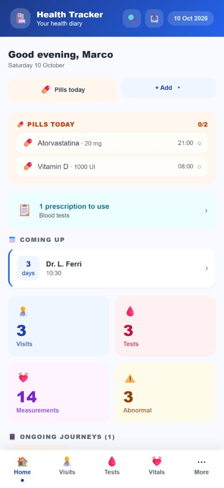
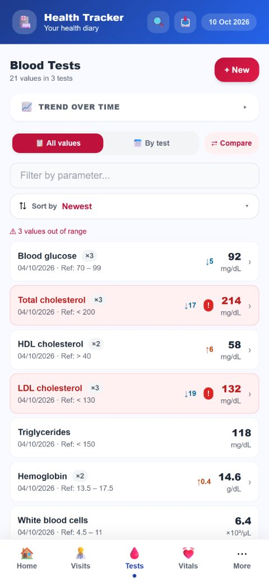
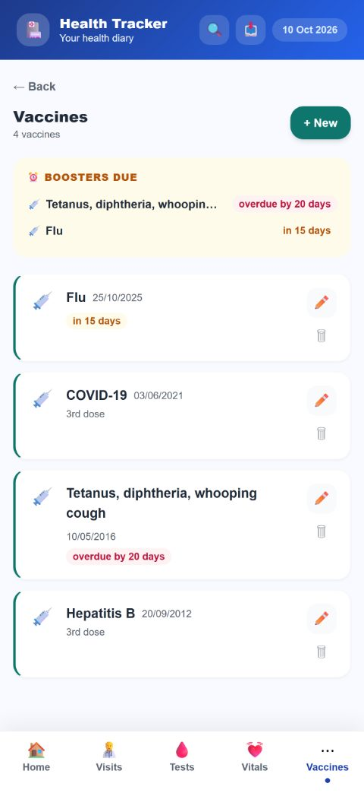
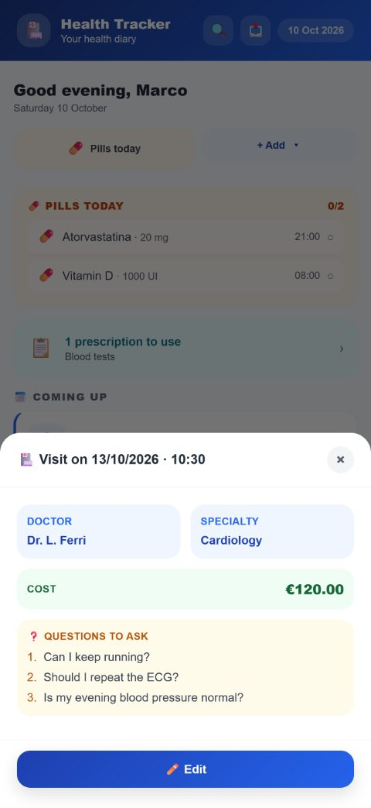

What it does
Snap your lab report
Take a photo or load the PDF of your results: the app recognises the values and fills them in, showing you what it read before saving. Recognition happens on the phone.
Your values over time
Each parameter shows the latest value, its history and a chart, with your lab’s reference ranges. You can compare two reports.
Visits and questions for your doctor
Record past and upcoming visits. Before a visit, write down your questions: the day before, a reminder tells you how many there are.
Medications and reminders
Treatments with their times, today’s pills to tick off, and a warning when a box is about to run out.
Vaccines and boosters
Each vaccine with date, dose and lot. Overdue or upcoming boosters at the top, and a reminder one week before.
Weight, blood pressure and Apple Health
Record weight, blood pressure, glucose and other vitals. If you like, import them from Apple Health: read-only, and iOS asks your permission.
Follow an issue from start to finish
Open a journey — a complaint, a treatment — and link visits, tests, treatments and updates on how it is going.
A report for your doctor
A summary PDF with tests, treatments, allergies and exams, to show or print.
Emergency card
Blood type, serious allergies, current treatments and who to call, in two taps.
Workouts
Record workouts with duration, distance and calories, and see how much you trained for each activity.
The whole family
With the Full Unlock you keep separate profiles for the people whose health you look after.
Your data is yours
Full backup to a file you keep wherever you like, also password-protected. If you change phones, it comes with you.
No account, no server
- There is no sign-up and no sign-in.
- Everything you write stays in the phone’s memory: it is not sent anywhere, we cannot see it and neither can anyone else.
- You can lock the app with Face ID and put a passcode lock on the most private parts.
Free, with an optional Full Unlock
The app is free to download and use. The Full Unlock is a one-time purchase, with no subscription, and adds among other things the PDF report, statistics with charts, family profiles, treatment reminders and the yearly summary of medical expenses.
Health Diary is a personal record-keeping tool. It does not provide diagnoses, medical advice or treatment, does not interpret your values and does not replace the opinion of a healthcare professional. If you have any doubt about your health, talk to your doctor.